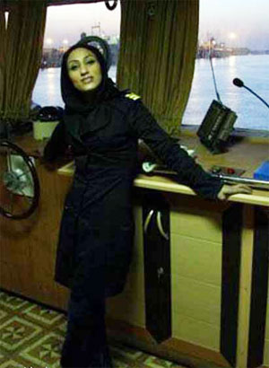
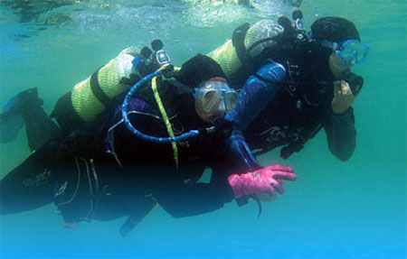

|
|

زنانی که هر روز به آسمان و باغوحش میروند
سه شنبه11 تیر 1392
نه خانه، نه آشپزخانه، نه اداره و نه باشگاه و مهمانیهای دوستانه... آنها روزشان را با رفتن به آسمان و دریا و باغوحش شروع میکنند. زنانی که به جای زندگی کارمندی یا خانهداری مشاغل نامتعارفی را انتخاب کردهاند و لقب «اولین زن» حرفه خود را دارند. یکی هر صبح از خانه به آسمان میرود، دیگری به اعماق دریا و آن یکی به جادههای خلوت لب مرز.

مژگان روستایی شاید عجیبترین شغل ایران را برای یك زن داشته باشد: پرورش كروكودیل در مزرعه شخصی! او كه اولین محموله كروكودیل ایران را وارد كرده كارش را از سال 89 رسما كلید زده و حالا هر روز صبحش را با 35 كروكودیل بزرگ و كوچك شروع میكند.
خودش میگوید: «کروکودیلها در عین خشونت، بسیار آرام، صبور، دوستداشتنی و بسیار عاقل هستند. وقتی با آنها کار و کنارشان زندگی میکنید متوجه میشوید که چقدر آنها برعکس مغز کوچکشان عاقل و باهوش هستند. کروکودیلها تا زمانی که مورد آزار قرار نگیرند و کسی پا به قلمروشان نگذارد هیچ آزاری ندارند. زمانی که سیر هستند هیچ چیزی نمیخورند ولی اگر در این شرایط هم مورد آزار قرار گیرند به شخص آزاردهنده فقط حمله میکنند و ممکن است شخص دچار قطع عضو شود ولی او را نمیخورند.»
كار كردن با این كروكودیلها از وقتی انگیزه مژگان روستایی شد كه تصمیم گرفت كاری مرتبط با رشته تحصیلی اش دست و پا كند. او در رشته جانور شناسی تحصیل كرده بود و دنبال نوآْوری بود و چه نوآوریای بهتر از پرورش كروكودیل؟ وحشیهای كوچكی كه تا پیش از آن پایشان به ایران باز نشده بود! مژگان روستایی میگوید: «برای شروع کار و گرفتن مجوز از شیلات ایران شروع کردیم و توانستیم موافقت اولیه را بگیریم و بعد دامپروری و بعد به اداره زیست محیطی مراجعه کردیم، برای گرفتن پروانه کار.»
اما در هیچ كدام از ادارات ایران قانونی برای واردات كروكودیل وجود نداشت و تلاشهای مژگان روستایی بهانه ای شد تا برای اولین بار آیین نامههایی برای این كار نوشته شود. با این حساب او میتواند مدعی باشد كه سنگ بنای پرورش كروكودیل در ایران را یك تنه گذاشته است. البته سختی كار او وقتی بیشتر شد كه خیلی از ایرلاینها قبول نمیكردند مسافران خطرناكی مثل كروكودیلها داشته باشند. بنابراین واردات كروكودیل هم با دردسر انجام شد. مژگان روستایی یک لقب اولین دیگر را هم برای خود کسب کرده: اولین تولید کننده چرم کروکودیل در ایران. او به خاطر نگهداری از كروكودیلها مجبور به ترك تهران و زندگی در قشم شده است چون هوای پایتخت برای كروكودیلها زیادی خشك و خنك است.
مژگان روستایی اگرچه زندگی کارمندی معمول را رها کرده و به خطرناک ترین مزرعه ایران رو آورده است اما به جز او زنان دیگری هم هستند که با انتخاب سبک زندگی شان، لقب «اولین» گرفته اند.
زنان آسمان و دریا

زهرا سالاریه اولین زن دریانورد ایران و خاورمیانه است که حتی تا 16سالگی شنا هم بلد نبود اما خیلی اتفاقی به دنیای دریانوردی کشیده شد. او در 15سالگی به عنوان خیاط وارد شرکتی شد که در آن جلیقه نجات میدوختند. کار کردن در این شرکت زهرا را با ناخداها آشنا کرد و مشوقی شد تا در دورههای قایقرانی شرکت کند.
می گوید: «درسهای تئوری کلاسها خیلی سخت بود و دانستن زبان انگلیسی در حد رفع نیاز هم اجباری بود، به خاطر همین روزها کار میکردم و شبها درس میخواندم تا از کلاسها عقب نمانم.»
او برای آن که با دریانوردیاش مخالفت نکنند، همه عملیات مربوط به دریانوردی را از تعمیر موتور گرفته تا بستن 70مدل گره ملوانی با طنابهایی هموزن خودش را یاد گرفت تا در آزمون پذیرفته شود. زهرا حالا ناخدایی است که چندین ساعت از روزش را روی دریا میگذراند.

میترا زنگویی اما اولین زن غواص ایران است که مدرک رسمی این رشته را دارد. او که قبل از این به عنوان ناجی غریق فعالیت میکرد دو سه سال قبل غواصی را در جزیره کیش یاد گرفت و به عنوان اولین زن غواص از سازمان فنی و حرفهای مدرک گرفت. میترا زنگویی اولین تجربه غواصیاش در عمق 18متری را اینطور روایت میکند: «خیلی برایم هیجانانگیز بود. با اینکه من سالها در استخر شنا کرده بودم اما دریا برایم تعریف دیگری داشت. به محیط آشنا نبودم و احساس ترس میکردم اما وقتی داخل آب رفتم، فهمیدم اینجا یك دنیای دیگر است و خدا را میتوان دید.»
او معتقد است دریا هم مثل فضا دنیای عجیبی دارد که اگر یک فضانورد لذت آن را درک میکرد، کلی انرژی و پول خرج رفتن به فضا نمیکرد. زنگویی حالا یك آموزشگاه غواصی در بوشهر دارد و كلاسهای آموزش غواصی برای زنان برگزار میکند. او البته تصمیم دارد بعد از این، یک کار عجیب دیگر را هم تجربه کند: جوشکاری زیر آب. کاری که با موافقت سازمان فنی حرفه ای استان بوشهر میتواند میترا زنگویی را تبدیل به اولین زن جوشکار زیر آب در کشور کند.
چندین هزار پا بالاتر از جایی که میترا زنگویی روز و شبش را میگذراند، شهرزاد شمس به عنوان اولین زن خلبان ایرلاینهای ایران مشغول حرفه خود است. او البته این عنوان را در میان زنان بعد از انقلاب دارد. شهرزاد شمس که به زبانهای فرانسه و انگلیسی تسلط کامل دارد دوره خلبانی را در شیراز گذرانده و حالا با هواپیمای ATR-72 در خطوط داخلی پرواز میکند. شهرزاد شمس میگوید: «وقتی پرواز میكنم در آغوش خداوند هستم و اگر او نباشد هرگز پرواز امكان ندارد.»
سلطان جادهها

بعد از آسمان و دریا، لقب اولین زنی که جلوتر از دیگر زنان به جاده زده است، به فاطمه رجبی میرسد. او اولین زن راننده کامیون در کشور است که انحصار مردانه ترانزیت را در ایران شکسته است. برای فاطمه رجبی انگیزه اصلی از انتخاب این شغل، همسرش بوده است: «همسرم حدود 30 سال است كه در این شغل فعالیت میكند و من در طول این مدت از او دور بودم تصمیم گرفتم برای كمكردن این فاصله وارد این كار شوم.»
فاطمه رجبی ماجرای گواهینامه گرفتنش را اینطور تعریف میکند: «بار اول چون دستپاچه شده بودم قبول نشدم، اما بار دوم سرهنگ راهنمایی و رانندگی پس از پایان امتحان عملی به من گفت تو قبول شدی ولی ما مجاز به پذیرش تو نیستیم چون آقایان اینجا 30یا 40 بار میآیند و میروند و قبول نمیشوند، اگر قرار باشد دفعه دوم امتحان شما را قبول كنیم و گواهینامه بدهیم میگویند پارتیبازی شده و صدای همه درمیآید. سرانجام بار هشتم قبولم كردند. افسران راهنمایی و رانندگی از من میخواستند كه تندتند دنده بگیرم و در سرازیریها خیلی به من سخت گرفتند تا شاید از آزمون صرفنظر كرده و پشیمان شوم، اما من سماجت به خرج دادم به حدی كه كف دستم از شدت دنده عوض كردن زخمی شد.»
خون بازی

زهرا شکوهی اولین زن قصاب ایرانی است که هر صبح دست به ساتور می برد تا راستهها را بیاستخوان و استخوانها را بیگوشت کند. 12سال است که پا به پای شوهرش مغازه قصابیشان را میچرخاند و با این که تا کلاس پنجم بیشتر نخوانده، حساب دخل و خرج قصابی را دارد. میگوید: «صبح که برای نماز بیدار میشوم دیگر خوابم نمیبرد. همان موقع برای ناهار غذا را بار میگذارم و سر ساعت ۸، مغازه را باز میکنم. ساعت ۱۱ هم دوباره به خانه برمیگردم تا بقیه کارهای مربوط به ناهار را انجام دهم و سر ساعت ۳، دوباره به مغازه برمیگردم و تا ۸ شب اینجا میمانم.»
با این حال زهرا شکوهی فکر میکند شغلش کمی خشن است و سر و کار داشتن با خون، روحیه همسرش را هم عوض کرده است: «همسرم خوب است اما کمی خشن است، نمیشود زیاد سر به سرش بگذاری چون زود عصبانی میشود، خون با آدم این کار را میکند. هر وقت شوهرم عصبانی بشود من باید ساکت بشوم. اما من این طور نیستم.»
زهرا شکوهی با همه خشونتی که شغلش دارد حاضر نیست سر گوسفند را ببرد. اگرچه گاهی سر گوسفند را میگیرد تا شوهرش ببرد اما همین هم ناراحتش میکند: «تا به حال این کار را نکردهام و هیچ وقت هم نمیکنم. بعضی وقتها شوهرم میگوید بیا سر بریدن را یادت بدهم اما من میگویم هر کاری از من بخواهی انجام میدهم جز این کار، دلم اجازه نمیدهد این کار را انجام دهم.»